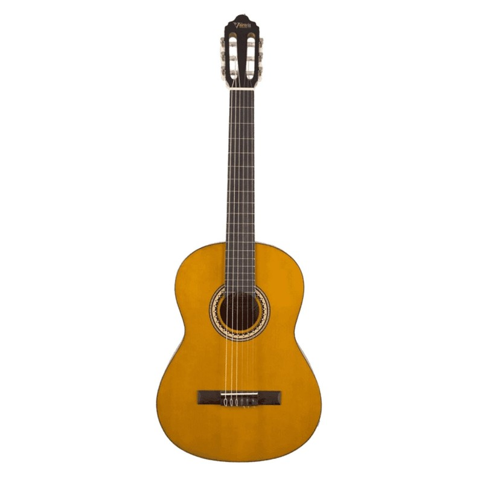
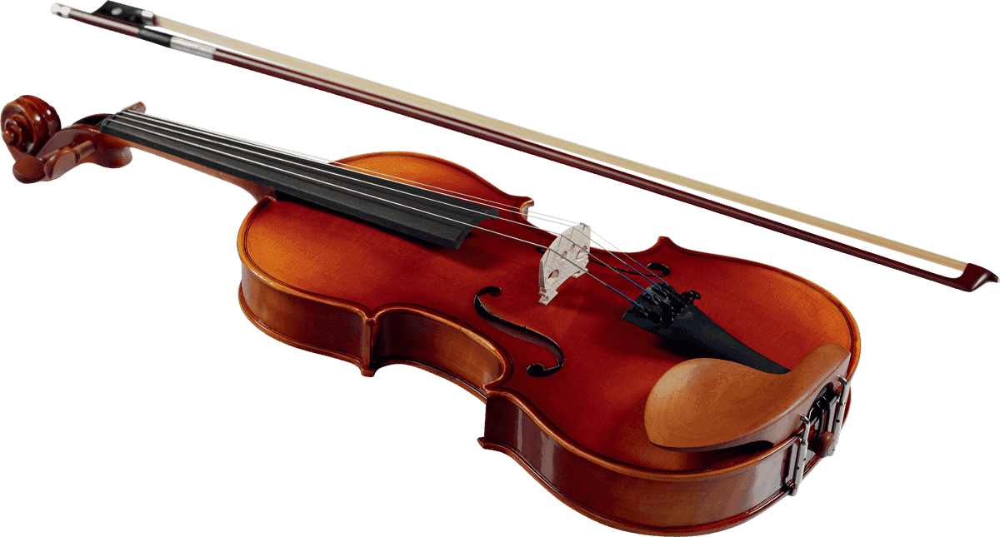
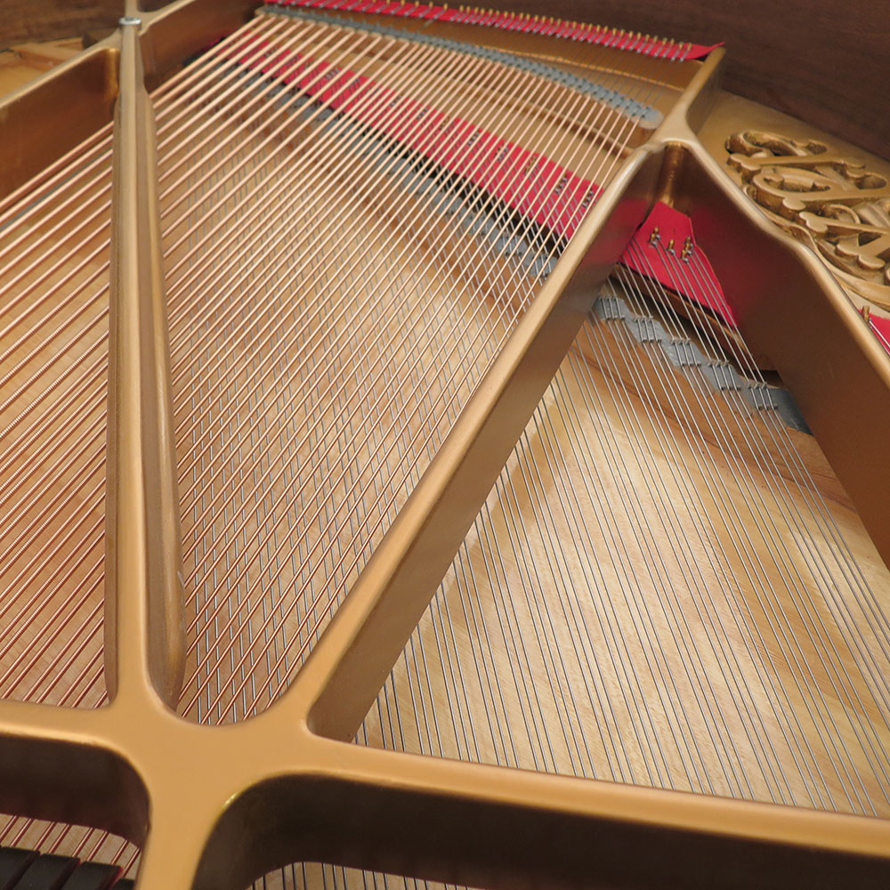

Pincer une corde pour créer un son
Lorsqu'une corde tendue est pincée, frappée ou frottée, elle se met à vibrer autour de sa position d'équilibre. Cette vibration crée des compressions et raréfactions de l'air environnant — une onde sonore. Cliquez sur la corde ci-dessous pour la mettre en vibration.
Conditions aux limites
Aux deux extrémités de la corde (les nœuds), le déplacement est nul — la corde est fixée. Entre ces deux points, elle peut vibrer librement. Cette contrainte impose que seules certaines fréquences sont possibles : celles pour lesquelles un nombre entier de demi-longueurs d'onde s'inscrit exactement entre les deux extrémités.
Longueur d'onde & fréquence
La fréquence fondamentale correspond au mode où la corde vibre en une seule « ventre » (demi-longueur d'onde = longueur de la corde). Plus la corde est courte, tendue ou légère, plus la fréquence fondamentale est élevée — c'est pourquoi un violoniste raccourcit la corde avec ses doigts pour jouer des notes aiguës.
La corde ne vibre pas qu'en une seule fréquence
En réalité, une corde vibrante produit simultanément sa fréquence fondamentale et ses harmoniques — des fréquences multiples entières de la fondamentale. Choisissez un mode pour visualiser la forme de la corde.
| Mode | Nom | Nœuds | Ventres | Fréquence | Intervalle musical |
|---|---|---|---|---|---|
| 1 | Fondamentale (f₀) | 2 | 1 | f₀ | — (référence) |
| 2 | 1ʳᵉ harmonique | 3 | 2 | 2 × f₀ | Octave |
| 3 | 2ᵉ harmonique | 4 | 3 | 3 × f₀ | Quinte + octave |
| 4 | 3ᵉ harmonique | 5 | 4 | 4 × f₀ | 2 octaves |
| 5 | 4ᵉ harmonique | 6 | 5 | 5 × f₀ | 2 octaves + tierce |
Nœuds & ventres
Un nœud est un point où la corde ne se déplace pas (déplacement nul). Un ventre est un point d'amplitude maximale. Pour le mode n, la corde présente n ventres et n+1 nœuds (en comptant les extrémités). Ces positions fixes dans l'espace définissent ce qu'on appelle une onde stationnaire.
Le spectre harmonique
En pratique, une corde pincée vibre simultanément dans tous ses modes. Le son perçu est la superposition de la fondamentale et de ses harmoniques. C'est le mélange particulier de ces harmoniques — leur nombre et leur intensité relative — qui donne au son son timbre caractéristique.
Modifiez la corde, écoutez le résultat
Jouez sur la longueur, la tension et la densité de la corde pour voir et entendre comment ces paramètres influencent la fréquence fondamentale émise.
🎸 Simulateur de corde vibrante
Modifiez les paramètres ci-dessous. La fréquence se calcule en temps réel selon la formule de Mersenne.
De la physique à la musique
Tous les instruments à cordes exploitent les mêmes principes physiques. Ce qui les différencie : la longueur des cordes, leur tension, leur matière, et la façon dont elles sont excitées (pincées, frappées, frottées) et dont le son est amplifié (caisse de résonance).

Guitare — corde pincée
Les 6 cordes de la guitare classique varient en diamètre (masse linéique) et en tension. Le guitariste raccourcit la corde en la pressant sur les frettes, modifiant ainsi la longueur vibrante et donc la fréquence. La caisse de résonance en bois amplifie le son par vibration sympathique.

Violon — corde frottée
L'archet frotté sur la corde crée une excitation continue grâce au mécanisme stick-slip : la résine de l'archet accroche la corde, la déforme, puis la lâche plusieurs centaines de fois par seconde. Ce mécanisme maintient une vibration entretenue, produisant un son continu et riche en harmoniques.

Piano — corde frappée
Dans un piano, chaque touche actionne un marteau recouvert de feutre qui vient frapper une ou plusieurs cordes tendues. L'impulsion est brève, et la corde vibre librement jusqu'à ce que l'étouffoir (soulevé pendant l'appui sur la touche) revienne la bloquer. La table d'harmonie en épicéa amplifie considérablement le son.